Settings¶
Repository¶
Maproom uses map data from outside sources. This data is cached to make editing your maps more responsive. The repository distinguishes between a cache and a session.
A cache contains the raw data downloaded from a provider if it’s reusable. Currently this covers the raster tiles, such as tiles from mapbox and mapquest and height data mapbox and mapzen. A separate cache is built for each tile provider and zoomlevel. If I make a map based on the same tiles (location, provider and zoomlevel) twice, tiles aren’t downloaded but taken from the cache. This improves speed a lot.
A session is a location where sources are stored for each map created which can’t be recycled. when creating a map based on raster tiles, these tiles are downloaded or taken from the cache and stiched into a single map image. The tiles can be reused in other maps, but this stiched image probably can’t. That image is stored in a session folder in the repository. This also applies to openstreetmap data. It’s currently not feasible to use a cached version. Each new openstreetmap layer means a new chunk of data is downloaded.
Since the amount of data you’re downloading and caching can get quite large, put the repo where you’ve got the space.
Note
Content provided through the Maproom script is copyrighted by the respective owner. Check out the copyright, license and attribution conditions for each of these sources. The creator of this script does not claim ownership and can’t provide a license for this content.
Put the repository somewhere where you’ve got the space
Map API key¶
Some mapping API’s require you to identify yourself with the use of an API key. This key is linked to your account with the respective map provider. Usually this means you have to make an account with Bing or Mapbox, find the API key in your account settings and paste it in here. Once you’ve got a good API key you can start using the maps from thse providers. Normally there’s a free account available. Only when you start consuming a LOT of maps you’ll be notified to get a paid plan. Map provider fees are not included in the Maproom licenses or subscription.
Currently the mapping keys are wiped when you update Maproom. Make sure you keep these keys handy in a password manager or something similar.
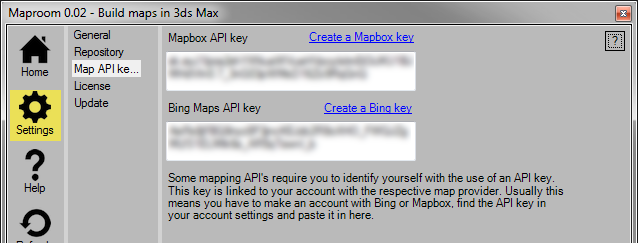Enter your map API keys
Mapbox¶
To create a Mapbox access token, you first need to sign up for a mapbox account. You can do that here. Then you can create an access token. You enter this access token in Maproom to link your mapbox data usage to your account. More about the access token
Create a Mapbox token
Bing¶
The same procedure applies to Bing. Sign in to the Bing Maps Dev Center with an existing Microsoft account or create a new one. More on the Bing Maps key here. A basic key will be enough at first! Keep in mind Bing maps are not available in the free version.
Create a Bing maps key
Stylesheets¶
Stylesheets are .ini files used to convert shapes into geometry based on a set of rules. Maproom comes with a production ready stylesheet and a few samples for demonstration purposes. You can make copies and modify them or start from scratch to make styles which fit your needs. There are two locations Maproom looks in to find stylesheets: the system location and the user location. The system location is fixed and sits in the Maproom installation folder. The user location is located in the map data cache folder by default but can be changed. More about working with stylesheets here: Stylesheet
Note
When modifying stylesheets or creating new ones you should do that in the user location. The system stylesheet location will be reset every time you install an update.

Manage your stylesheets
License¶
By default Maproom comes with a free license. You’re able to create good looking image based maps with the free version. If you’d like to build bigger maps and use terrain heights, openstreetmap, shapefiles and more you can purchase a pro license. You can purchase a pro license in the shop.
Todo
Update purchasing and license request process video.
Get a free beta license
Node locked¶
You can purchase node locked licenses in the shop. Each license can be used on one PC at a time. The system works with your email address and a plain text product key. You get the product key by email after the purchase has been processed. In the License tab of the Settings panel presse the little pencil icon and paste your product key. Press the green checkmark icon and finally the Activate product key... button. This will activate your pro license and tie it to the PC you’re working on. You’ll need to restart Maproom for the new key to take effect.
If you buy multiple keys in one go, you get multiple product keys. You can activate each key on a different machine.
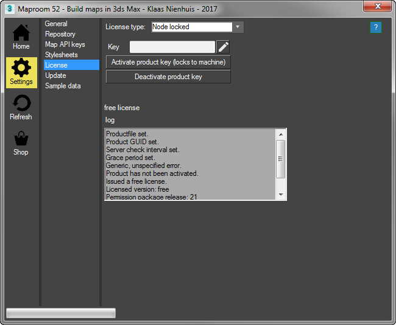Open the license panel in the settings. By default it shows the node locked license options
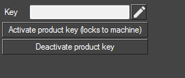Press the little pencil icon to enter the product key
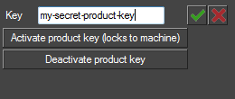Paste in your product key, press the green checkmark and press Activate product key...
After activating your product key, it’s locked to this machine. Please restart Maproom for the licnese changes to take effect.
You can also deactivate a product key. This means that you make the product key available to use on another machine. Press the decativate product key button. Once you do that, you’re auotmatically switched to the free plan. Deactivating a license is convenient when you switch to a new PC for instance. The number of deactivations is limited per product key.
Floating license¶
It’s possible to purchase a floating license for bulk orders. For example if you want to use Maproom in a teaching environment or a large studio with many seats. A floating license doesn’t add extra functionality. For more details on floating licenses go here: Floating licenses.
Feature comparison¶
The pro license will contain all features covered here in the documentation. The free license allows you to build maps with the Mapbox and OSMMapnik image sources. You can make maps of 1K size. Due to the nature of these maps you can zoom to any portion of the world though the maximum texturesize will be 2048*2048 pixels. The free license isn’t able to generate terrain heights or process vector data such as openstreetmap or shapefiles. an exception are the Demo presets which are also available in Maproom Free: Demo presets.
Updating¶
The script checks for an update on a server every time it starts up. If there’s an update available, the script will notify you with a message in the home screen. If you press the message the Update panel will open. Here it says which release number you currently have and which release is available on the server. A small overview of the most important features of the update is also shown.
If there’s an update available there’s also a button available. Press it to download the update and start the installer. Follow the instructions under the Installation chapter. However, you don’t need to customize the gui again. Just close the installer and script and reopen the script. It’s been updated now.
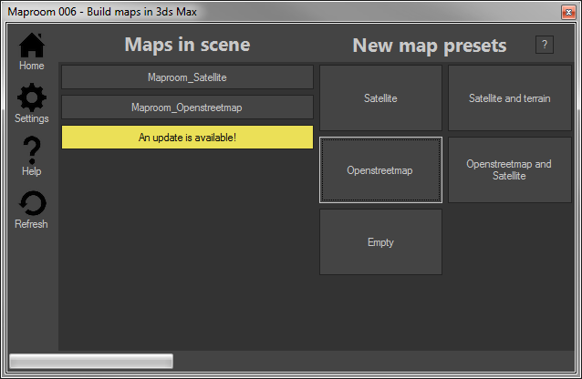An update is available, press the yellow button to open the update panel.
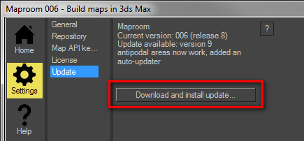An overview of the available update. Press the button to install it.
Sample data¶
Maproom comes with sample data courtesy of their respective owners. Currently you can request three sample areas of CyberCity 3D buildings. Enter your email address and press the Request... button. A link to the data will be emailed to you together with a tutorial on how to work with it.
Request sample data
Image source¶
Image sources are the places where Maproom gets its satellite images and other map textures from. Maproom has built in image sources, such as Bing, Mapbox and Stamen. But there are a lot more image providers out there. The User Image sources section enables you to set up your own custom sources.
An image source provides its images through a specific url template. This url template is used to download the map textures at any zoomlevel and from any location. Usually image providers follow a common pattern, but you still need to set up that url pattern. The pattern contains a few symbols. Here’s an example:
http://api.tiles.mapbox.com/v4/{mapid}/{zoomlevel}/{tilex}/{tiley}.png?access_token={token}
The first part http://api.tiles.mapbox.com/v4/ points to the Mapbox server. Then we have the symbols
{mapid}this is usually the type of map. For instance the Bing satellite maps has as mapid “Aerial” and the Stamen watercolor map has “watercolor”. Sometimes you need to provide this, other times it can be left out.{zoomlevel}this determines the zoomlevel of the images you’re downloading. Every url needs this symbol.{tilex}and{tiley}these are the tile coordinates being downloaded. Every url needs this symbol.{token}some map providers require an access token. Others don’t. Usually you can get an access token when you set up an account with the map provider.
Image providers all use similar url’s
http://sat.owm.io/sql/{zoomlevel}/{tilex}/{tiley}?appid={token}&op=rgb&from=s2&select=b4,b3,b2http://a.sm.mapstack.stamen.com/($d9da8e[@p],(mapbox-water,$60c9fe[source-in]))/{zoomlevel}/{tilex}/{tiley}.pnghttps://maps1.aerisapi.com/{token}/{mapid}/{zoomlevel}/{tilex}/{tiley}/current.png
Sometimes the order of the symbols is different. Sometimes you don’t need a token or a mapid. You don’t need to guess these url’s. Every map provider can tell you how these url’s should look.
Warning
Even though it’s technically possible to add a certain image source, this doesn’t mean you’re allowed to. ArcGis for instance has beautiful image sources, easily accessible. But it’s only allowed to use them in software by ESRI. Google maps would also be pretty cool to use, however you’ll have to pay a hefty license fee to do so. Always keep the terms and conditions in mind.
Working with image sources¶
Go to Settings > Image sources. There you see a dropdown with the custom image sources. Use the New, Delete and Clone buttons to create or delete an image source. Use the Test button to test it once you’ve created one. The test will tell you if the image source has been set up properly. Give your image source a proper name and make sure it’s unique. Fill in the url template, optionally the map id and token and the zoom limits. Make sure you add the attribution required by the map provider.
Note
Content provided through the Maproom script is copyrighted by the respective owner. Check out the copyright, license and attribution conditions for each of these sources. The creator of this script does not claim ownership and can’t provide a license for this content.
A user image source setup from Aeris Weather. Note the blurred out token. This provider needs you to make an account
Examples¶
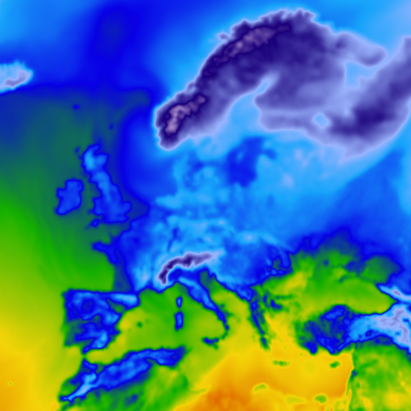Temperature forecast from Aeris Weather
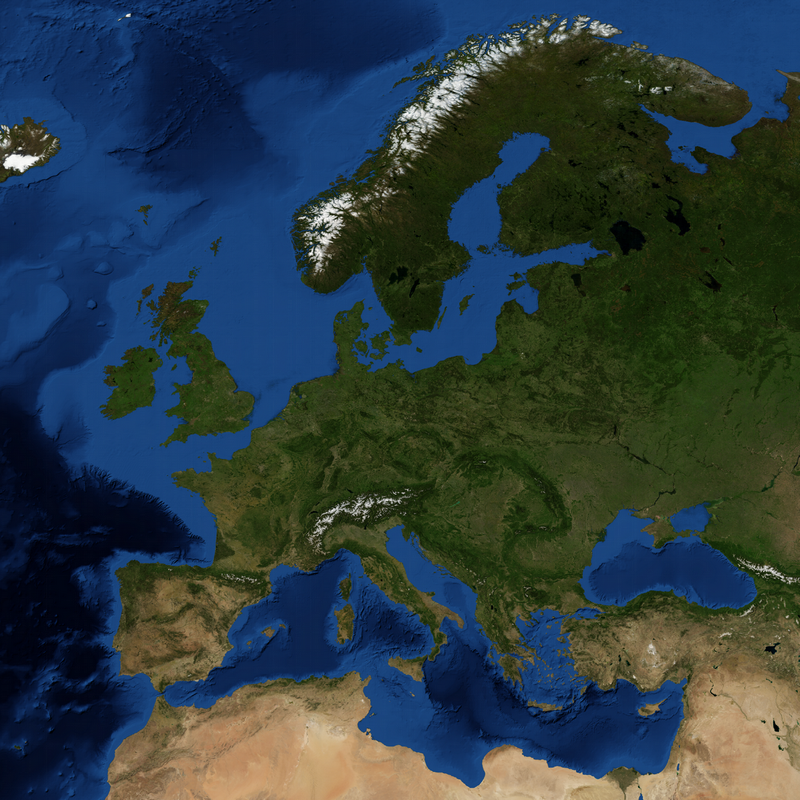Blue Marble from Aeris Weather
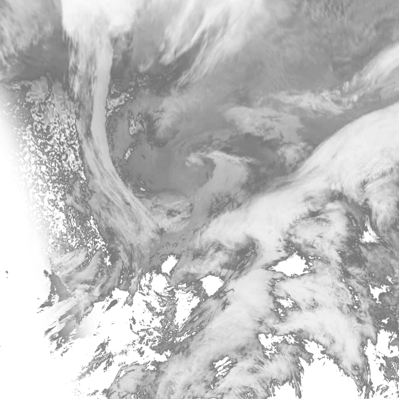Clouds from Aeris Weather
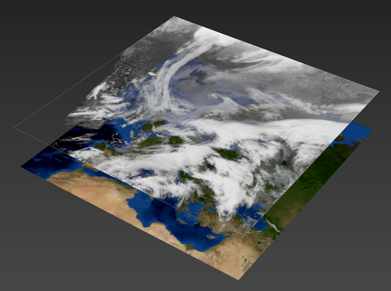Clouds and Blue marble combined
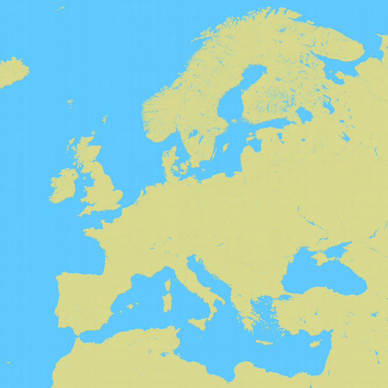A style from Mapstack by Stamen
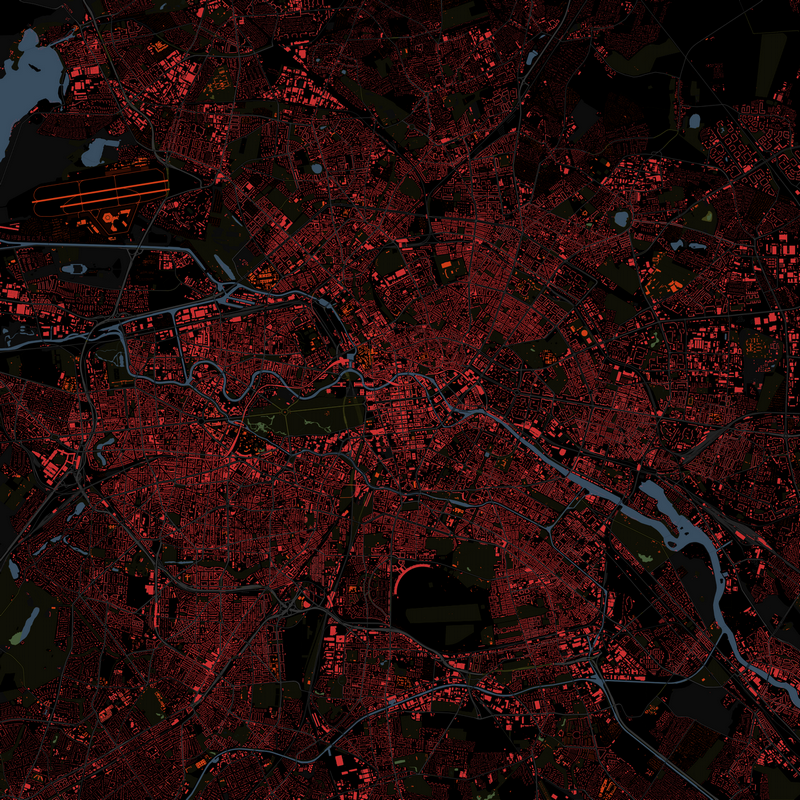Another style from Mapstack by Stamen
Mapstack Tutorial¶
Here’s how to get the correct url from Mapstack. First go to Mapstack and then press the “Try it” button. Fiddle with the map layers and settings. It’s best just to try it for a bit and create a style you like. Once you’re satisfied, in the map on the right side of the screen, rightclick and press View image from the dropdown. Copy the url of that image.
A style from Mapstack by Stamen
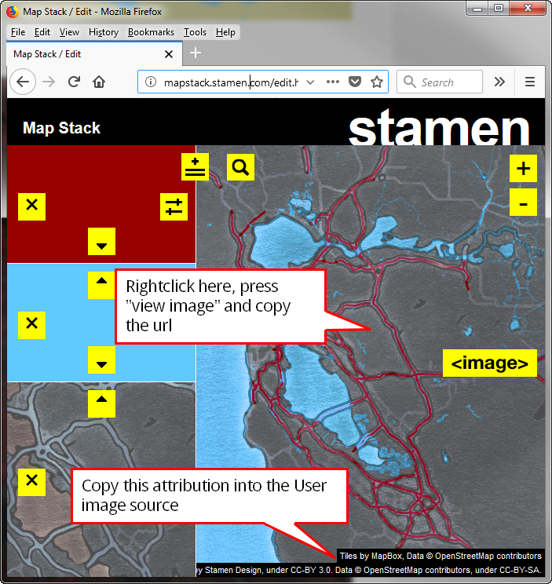Then in Maproom, create a new image source and use the Mapstack template. The Mapstack template already comes with a url. We just need to replace the part which determines the look of the map. This is the url of the Mapstack template
http://a.sm.mapstack.stamen.com/($9a9a30[@p],(mapbox-water,$60c9fe[source-in]))/{zoomlevel}/{tilex}/{tiley}.png. We need to replace the middle part ($9a9a30[@p],(mapbox-water,$60c9fe[source-in])) with the middle part of the url you just copied. Also make sure to copy the attribution you see in the bottom right of the map. An example of this is
Tiles by MapBox, Data © OpenStreetMap contributors Tiles by Stamen Design, under CC-BY 3.0. Data © OpenStreetMap contributors, under CC-BY-SA.
Where to get these¶
There are many places you can get access to custom styles. Some of these are freely accessible, for others you need a free token, others are commercial.
Units¶
If your system units are set to small units, like meters or inches, making maps will cause issues in 3dsMax. A map of a city of 10*10 km measures about 400.000 inches. 3dsMax has difficulty showing large units like these accurately. I advise to use kilometers or miles when making maps. Maproom notifies you of this in the home screen and offers you shortcuts to change your system units. You can also do this manually. Keep in mind you need to change the system units, not the display units.
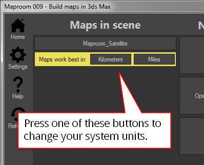A notification in the home screen helps you quickly change your system units
Changing the system units manually is also possible. Go to the Menu > Customize > Units setup… Then press the System Unit Setup button. In the popup pick the system unit scale you want to use. I recommend Kilometers or Miles.
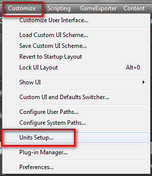Got to the Customize menu
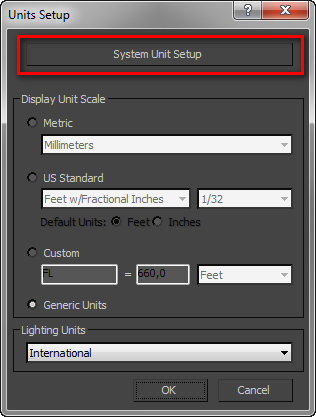Open the System Units Setup
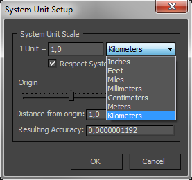Pick a system unit scale appropriate to making topographic maps